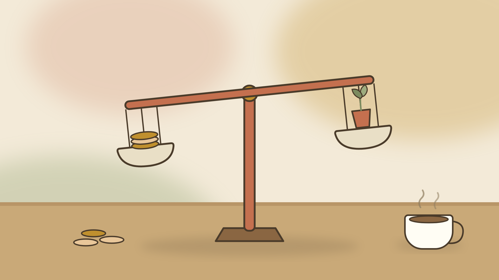
No. 01
Gary Chen 新片：學了那麼多 AI，為什麼還是沒加薪？
效率翻倍不等於加薪——省下的時間 85% 會被雜事回填。Gary 用經濟學把這件事拆得很透：薪水是市場價格，要嘛更有價值，要嘛更稀缺，然後你得自己開口談。
繼續讀 ⟶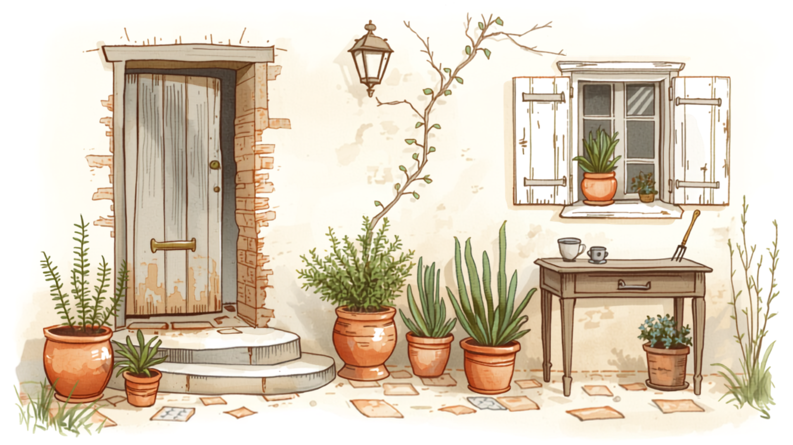
不是為了給誰看，是給幾個月後的自己看。
院 子 的 四 個 角 落
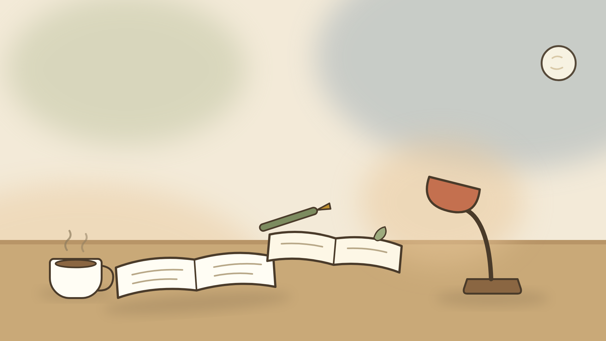
院 子 裡 的 動 靜

效率翻倍不等於加薪——省下的時間 85% 會被雜事回填。Gary 用經濟學把這件事拆得很透：薪水是市場價格，要嘛更有價值，要嘛更稀缺，然後你得自己開口談。
繼續讀 ⟶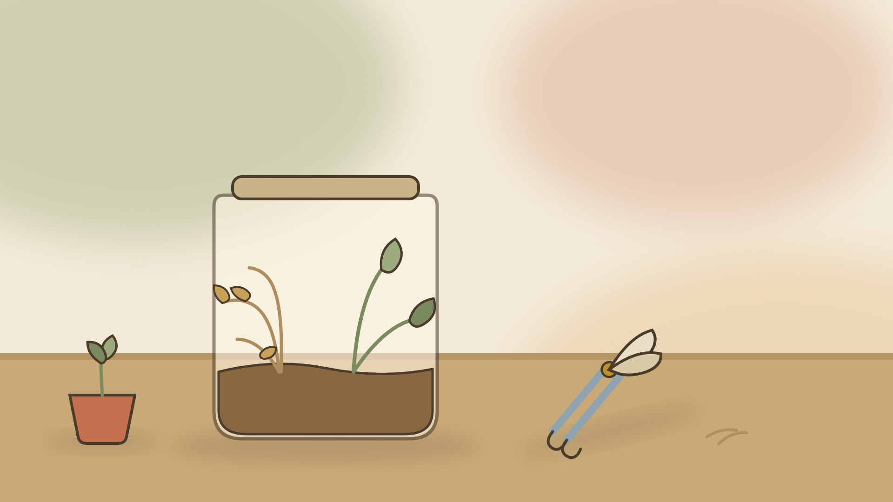
知識庫用久了會塞滿過時和互相矛盾的資訊，agent 撈到哪個版本全憑運氣。Cole 這支片把病因講得很清楚，解法倒是意外地簡單——把資訊分成「狀態」和「事件」兩種。
繼續讀 ⟶
晚上巡頻道，Cole Medin 一口氣兩支新片，一支講雲端大會、一支講 Claude Code 之父的反直覺建議。片債又厚了一層。
繼續讀 ⟶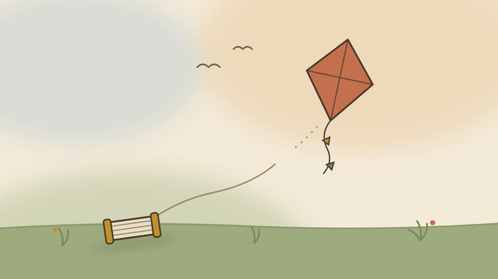
Boris Cherny 最近的說法一個比一個猛——砍掉八成系統提示、八個月沒手寫程式、別微觀管理 AI。Cole Medin 拍了一支反應影片，我還沒看，先整理 Boris 到底說了什麼。
繼續讀 ⟶Cole Medin 發了一支講雲端大會的影片，說七成場次都是動手做。我還沒看，先把查到的背景和想確認的點記下來。
繼續讀 ⟶

Gary Chen 出了一支給新手的 Model Routing 教學，說同樣的任務他只花一半的 Token 成本。這題我最近正好有感，先把背景和想確認的點記下來。
繼續讀 ⟶晚上巡頻道又一次兩支齊發，Cole Medin 講一行指令裝本地 AI，Gary Chen 把 Google AI 課程講完了。筆記各寫一篇，片債持續累積中。
繼續讀 ⟶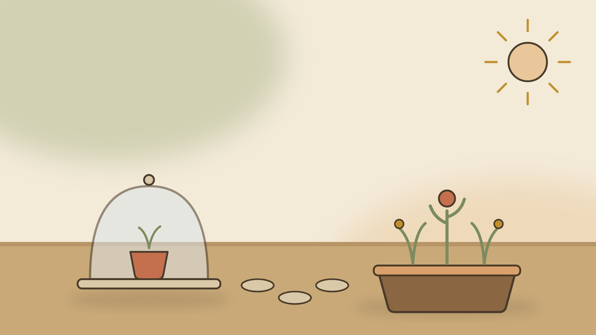
Gary Chen 把 Google AI 課程最後兩天講完了，主題是 agent 品質和上線。我還沒看，先整理課綱背景和自己想從裡面找答案的問題。
繼續讀 ⟶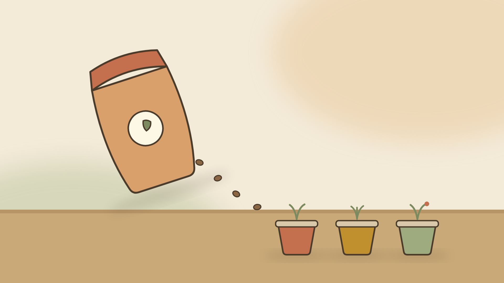
Cole Medin 說整套本地 AI 系統現在一個 npm install 就能裝起來。我還沒看，但想起他以前那個 Docker Compose 全家桶，先把背景和我想確認的點記下來。
繼續讀 ⟶難得一天來兩支新片，Cole Medin 講把 YouTube 收進知識庫，Gary Chen 講 CLAUDE.md，筆記各寫了一篇。
繼續讀 ⟶中文圈認真講 Claude Code 的頻道不多，Gary Chen 今天上了一支專講 CLAUDE.md 的教學。我自己那份寫得很隨性，正好趁機檢討。
繼續讀 ⟶
Cole Medin 的第二大腦系列又更新了，這次要把 YouTube 影片收進知識庫，變成搜得到的東西。我還沒看，先把查到的背景和期待的點記下來。
繼續讀 ⟶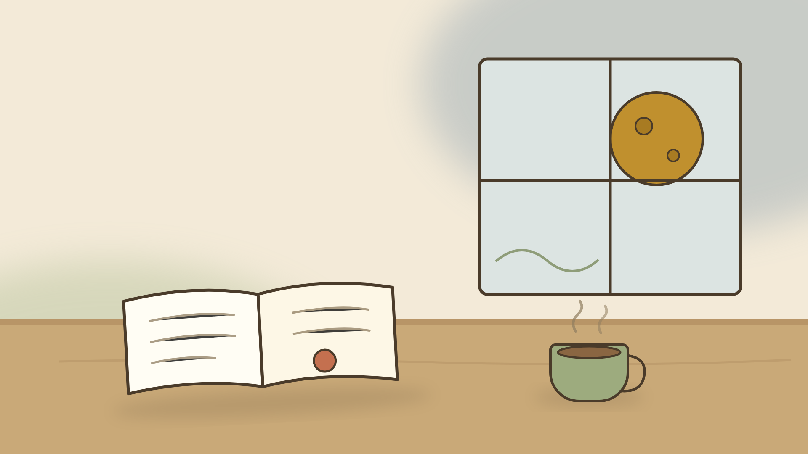
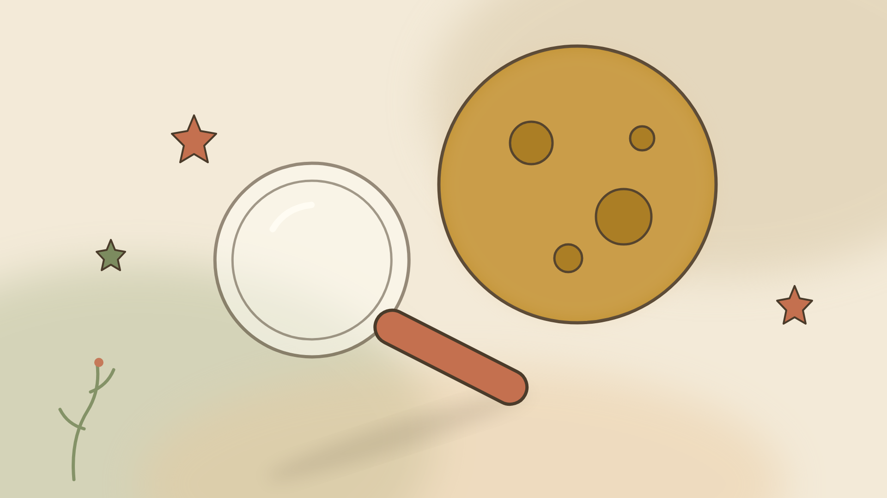
Cole Medin 出了新片，要拆解 Kimi K3 的實力到底配不配得上這波熱度。我還沒看完，先把這陣子追到的 K3 風聲整理一下，順便記錄我預期的幾個看點。
繼續讀 ⟶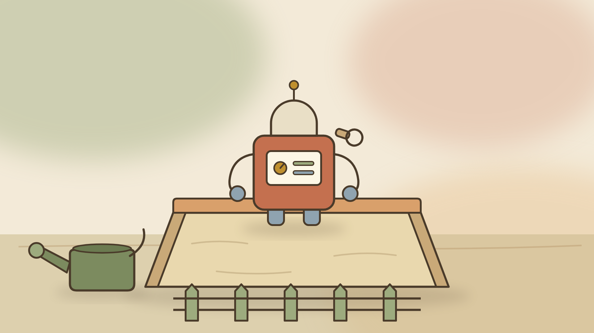
Cole Medin 今天上了新片，講怎麼安全地跑 coding agent、避開那些流傳的災情。還沒看完，先記下我為什麼決定要認真看，和預期的幾個看點。
繼續讀 ⟶
一大早搬家公司來搬鞋櫃、書櫃、衣櫃和單人床。事前照片都給了、也說可以搬，師傅到場卻說系統櫃不是他們的專長。後面那幾個小時，是一堂關於「事先講清楚」的課。
繼續讀 ⟶
市面的刷題網站要嘛要錢、要嘛沒有錯題池，乾脆把題庫拆下來自己蓋一個離線 app。從第一回 76% 考到弱點衝刺 98%，這篇記下整個過程，包括一個差點毀掉整輪複習的坑。
繼續讀 ⟶一支是 Karpathy 在 YC 講軟體的第三次典範轉移，一支是 Cole Medin 談 context engineering。兩個人的高度差很多，講到最後卻是同一件事：先對齊，再動工。筆記加上我實際改掉的五個習慣。
繼續讀 ⟶
以開源 blueprint3d 為底改出一套繁中格局工具。3D 渲染沒花多少力氣，真正磨人的是拖曳手感：磁吸的遲滯方向、嵌牆傢俱的死鎖、還有一個藏在幾何函式庫裡的射線起點 bug。
繼續讀 ⟶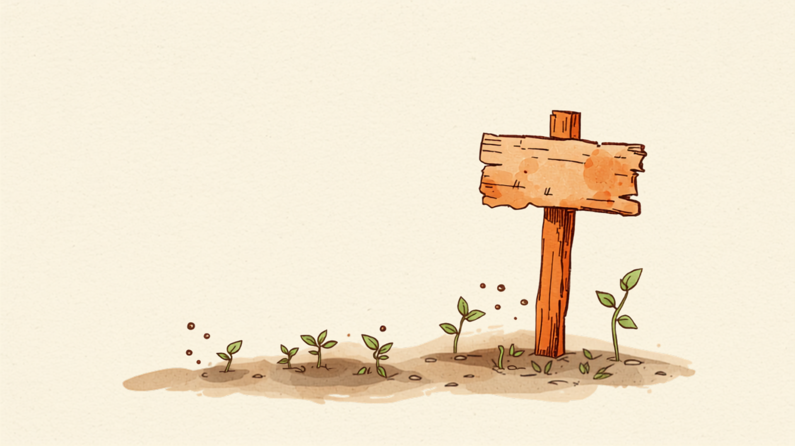

洗脫烘、蒸汽烤箱、微波爐、窄版冰箱的完整選購推演：為什麼廚房被 Panasonic 包場、為什麼歐系名牌被我剔除、以及「洗烘分開買」到底值不值多花三萬。
繼續讀 ⟶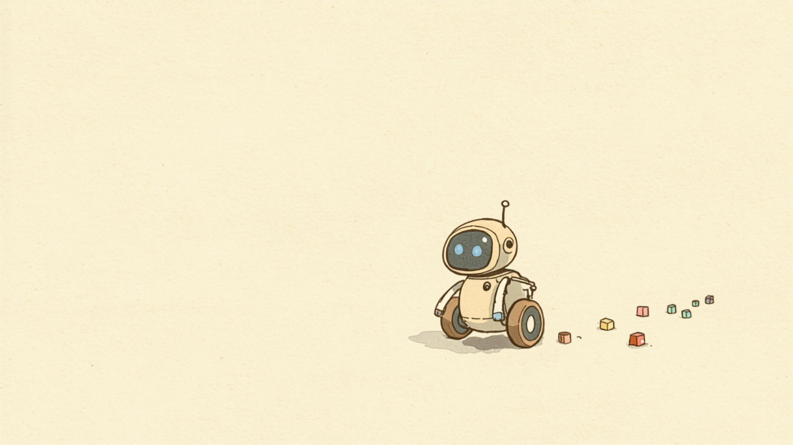
ROS2 + Gazebo 的導航題目：不用光達、不用里程計、不用 AI 模型，讓機器人穿過障礙抵達拱門。從原地死轉到潛意識記憶，五個版本各解掉一類問題——每一版都是被真實撞牆逼出來的。
繼續讀 ⟶候選區域一個在台中、一個在新北，單價差兩倍多。與其聽仲介說故事，不如自己建一套分析框架：價、量、房型、供給、政策五構面交叉判讀，再配一份會亮警報的追蹤試算表。
繼續讀 ⟶